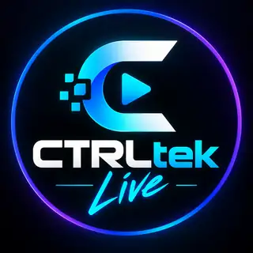
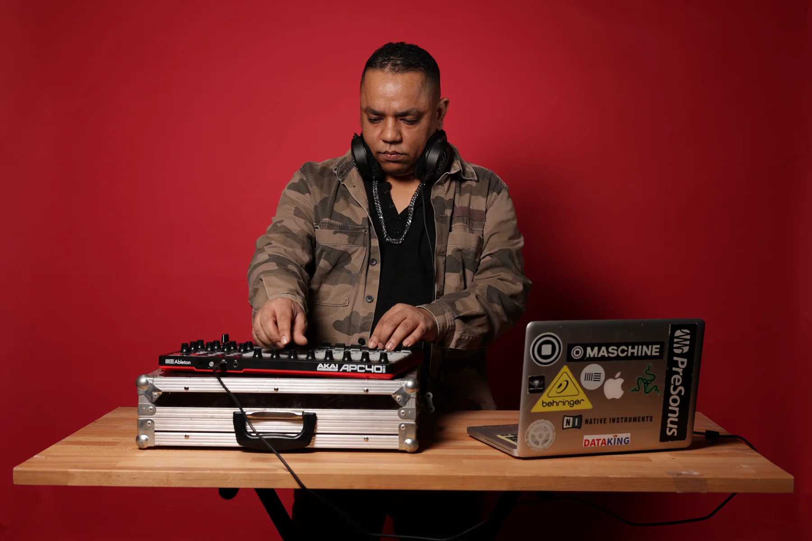

Creative Services
Artwork, mastering, EPKs, release assets, production and support at artist-friendly prices.
Explore services →Global ecosystem for electronic artists

Join the community for free, build tracks with other artists, access creative services, submit music to our label and unlock live opportunities.
Free to join · Open worldwide · Built for electronic artists
CTRLtek.Live
Artwork, mastering, EPKs, release assets, production and support at artist-friendly prices.
Explore services →One workspace per music project: chat, artists, brief, stems, files, versions and feedback.
Explore collaborations →Join the community for free and submit your demo to A&R. Artistic approval opens the label release pipeline.
Explore Records →DJ sets, electronic live, controllerism and hybrid performances — turn projects into stage opportunities.
Explore Live →Founder / Artistic Direction
Producer, DJ and live performer based in Toulouse, IssamFire works across melodic, dark, industrial and hypnotic techno. His catalog includes releases on G-Mafia Records and BeatCode.
CTRLtek.Live expands that production and performance culture into an open platform where artists can join for free, collaborate, prepare releases, submit demos and access live opportunities.

Artistic direction and development of the CTRLtek.Live ecosystem.
Collab Engine
The Collab Engine organizes work around the track: project workspace, chat, stems, files, versions and feedback. Collective will unlock the full experience.
CTRLtek.Live music projects will appear here.
Creative Services
Artwork from €9.90, feedback, mastering, EPKs, release assets, production and visualizers. Collective members receive preferential pricing.
CTRLtek.Live Records
Two conditions: be a community member and submit a demo for A&R approval. Buying a service never influences an A&R decision.
Live / Booking
CTRLtek.Live develops performer profiles and booking opportunities. Booking commission is 15% only on opportunities actually generated by CTRLtek.Live.
Controllerism 01
Controllerism 02
Discover
Join Free
Community membership is free and open to electronic artists worldwide. No subscription is required to join, submit a demo or be considered for a live opportunity.